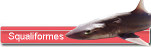
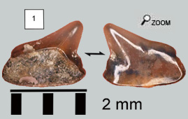
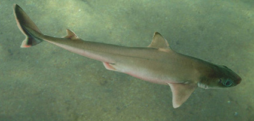
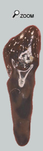

Mal connus ...

Les squaliformes constituent une famille assez difficile à définir au point que les spécialistes ne sont pas encore tous d'accord sur son organisation.
 En effet les squalomorphes regroupent de nombreuses espèces allant d'animaux de plusieurs m à de tous petits requins. De la même façon, l'écologie des espèces varie énormément d'un genre à l'autre.
Pour ce qui concerne le miocène, on rencontre surtout de toutes petites espèces avec des dents inclinées vers la commissure avec un tablier émaillé qui descend très bas sur la racine. Pour le reste, je ne serais pas surpris qu'on connaisse assez mal les espèces du miocène compte tenu de notre connaissance incomplète des familles actuelles !
Dans les faluns, les découvertes de squalomorphes ne sont pas fréquentes, d'autant plus que les dents sont minuscules.
Les grands fonds ...

 De nombreuses espèces de squaliformes vivent sur les grands fonds, où ils se nourrissent de restes de poissons morts ou de petits invertébrés. La mâchoire supérieure est dotée de dents en pique pour agripper la proie et la mâchoire inférieure possède de petites dents très coupantes pour la cisailler. Cette organisation des mâchoires permet de s'attaquer à des proies mortes ou vivantes de taille assez importante. Une petite dent montrée ci-contre pourrait être une dent supérieure de squaliforme. Le fait le plus marquant c'est la présence de 2 petites expansions émaillées qui montent sur la racine. Ce caractère se retrouve chez d'autres squaliformes récents. Mais Il y a peu de chance pour qu'on puisse retrouver l'espèce qui a fourni cette dent à cause du manque de fossiles et d'une manière générale de connaissance de ces requins.
|